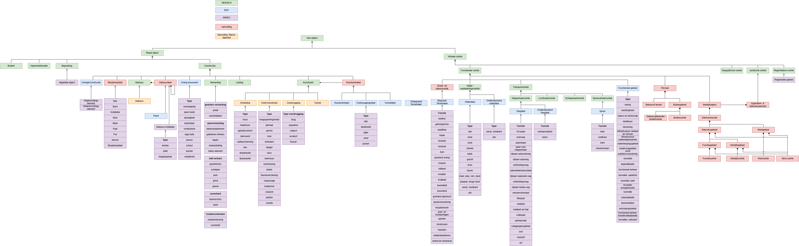
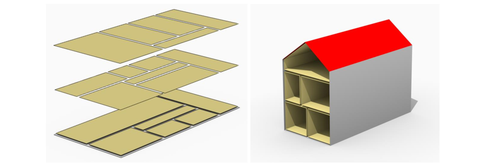

Dit is een werkversie die op elk moment kan worden gewijzigd, verwijderd of vervangen door andere documenten. Het is geen stabiel document.
1. Inleiding
Dit onderdeel is niet-normatief.
Deze gegevenscatalogus beschrijft de 3D-uitbreiding van IMGeo. Voor de achtergrond, ontwikkeling, positionering en opbouw van de BGT en IMGEO wordt verwezen naar de inleiding van de bestaande gegevenscatalogus [BGT12] en gegevenscatalogus [IMGEO22]. Ook wordt gebruik gemaakt van het dynamisch document IMGEO-objectenhandboek
De 3D-uitbreiding sluit inhoudelijk aan op de bestaande IMGeo-standaard en bouwt voort op de daarin vastgelegde objecten, definities en afspraken. Waar mogelijk worden bestaande afspraken ongewijzigd overgenomen. Alleen waar de toepassing in 3D daarom vraagt, worden deze aangevuld of nader gespecificeerd. De 3D uitbreiding maakt gebruik van de [CityGML3]
De 3D-afspraken vormen daarmee een uitbreiding op de bestaande 2D-standaard en moeten in samenhang met de bestaande gegevenscatalogus worden gelezen. Bij verschillen tussen de 2D- en 3D-afspraken zijn de in deze gegevenscatalogus opgenomen 3D-afspraken van toepassing voor een 3D-toepassing.
2. Ontwerpprincipes
Voor de inhoud van de IMGeo-3D zijn de volgende ontwerpprincipes gehanteerd.
2.1 Topografie
De IMGeo-3D bestaat uit 3D-abstracties van objecten in de werkelijkheid, gelimiteerd tot
de beschreven, fysieke en functionele, topografische objecten met een duidelijk meervoudig gebruik,
samengevat onder de term 3D-basistopografie.
2.2 Schaalbereik
De bestaande 2D-topografische gegevens zijn geschikt voor een schaalbereik van 1:500 tot 1:5.000. De IMGeo-3D voegt een derde ruimtelijke dimensie toe. Dit behoudt dezelfde schaalnauwkeurigheid.
2.3 Reële en virtuele objecten
De domeinmodellen BGT 1.2 en IMGEO 2.2 bevatten voornamelijk fysieke, concrete topografische objecten. Deze objecten zijn binnen het NEN3610-2011 raamwerk gepositioneerd. Aangezien nieuwere versies van BGT en IMGEO zich gaan baseren op NEN3610-2022 ([NEN3610]) zal deze versie ook als topmodel gebruikt worden voor IMGeo-3D. Een belangrijk verschil tussen de NEN3610:2011 en NEN3610:2022 is het onderscheid dat gemaakt is in de NEN3610:2022 tussen een Reëel Object en een Virtuele ruimte. Ook in CityGML 3.0 wordt een duidelijk onderscheid gemaakt in ruimte en in fysiek object dat de ruimte begrenst. Hiermee wordt het mogelijk om bijvoorbeeld asfalt (Reëel object) te modelleren als horizontale begrenzing van de onderkant van een weg (Virtuele ruimte) of daken (Reëel object) als horizontale begrenzing aan de bovenkant van een verblijfsobject (Virtuele ruimte). Het laatste voorbeeld vergt een uitbreiding van BGT/IMGEO Objecten.

Figuur 1Voorstelling van hoe een mapping van (deels toekomstig) BGT en IMGEO zou kunnen zijn onder het NEN3610:2022 raamwerk
2.4 3D Dekking
IMGeo 3D kent dezelfde dekking als IMGEO en BGT in het horizontale vlak. In het verticale vlak is de dekking zowel bovengronds als ondergronds. Deze dekking beschrijft de ruimtelijke scope van het 3D model en impliceert niet dat binnen deze gehele ruimte daadwerkelijk objecten zijn gemodelleerd.
2.5 IMGeo-objecten in de BGT
nvt...?
2.6 Modellering
IMGeo-3D hanteert het Basismodel Geo-informatie (NEN 3610:2022) voor de
modellering. NEN 3610:2011 conformeert zich aan de ISO 19100 standaarden voor
geo-informatie. Deze gelden daarom ook voor de BGT.
De BGT is een tweedimensionale objectenverzameling. Om de stap naar 3D op een
later moment te kunnen maken, is het BGT-model gebaseerd op CityGML 2.0.
IMGeo-3D bouwt voort op CityGML en sluit aan bij het CityGML 3.0 Conceptual Model. Daarmee wordt de bestaande relatie met CityGML voortgezet, en gebruikt het model de vernieuwde conceptuele modellering van CityGML 3.0. Het is mogelijk om bestaande CityGML 1.0 en 2.0 data up te graden naar CityGML3.0.
2.6.1 Level Of Detail (LOD)
Een belangrijk concept in 3D-modellering is het Level Of Detail LOD. Een LOD representeert daarbij een specifieke geometrische abstractie van een object in de werkelijkheid. Door deze abstracties op gestandaardiseerde wijze te definiëren, is het mogelijk om datasets op verschillende detailniveaus te gebruiken en kunnen gegevens uit verschillende bronnen beter worden gecombineerd. De LOD's zijn daarmee niet verschillende objecten, maar verschillende geometrische representaties van hetzelfde object.
Als basis voor IMGeo-3D kunnen de vier Levels of Details (LOD-0, -1, -2 en 3) van de CityGML standaard gebruikt worden.
De volgende definities worden in de CityGML specificatie gegeven voor het voorbeeld gebouw:
LoD van een gebouw zoals beschreven in de CityGML3.0 standaard
Level
Beschrijving
LoD0
Een representatie van een gebouw of vertrek met niet volumetrische geometrie zoals een punt, vlak (polygoon) of meerdere vlakken (voor bijvoorbeeld de 'footprint' of 'roofprint').
LoD1
Een representatie van een gebouw of vertrek als een blok/prisma vorm.
LoD2
Een representatie van een gebouw of vertrek als een volume met (meestal) verticale muren, waarbij de vlakken die het dak representeren zijn verfijnd.
LoD3
Een representatie van een gebouw of vertrek als een schil of een collectie van constructieve elementen. Dit is de enige LoD die gevelopeningen ondersteunt.
De documentatie van CityGML 3.0 over de LOD's is algemeen en conceptueel. Dit biedt flexibiliteit om verschillende soorten 3D-modellen binnen het CityGML-framework te modelleren, maar maakt het tegelijkertijd lastig om eenduidig vast te stellen hoe een bepaalde LOD de werkelijkheid representeert. Zo is niet altijd vastgelegd welke geometrische vereenvoudigingen moeten worden toegepast en welke onderdelen van een gebouw bij een bepaald LOD moeten worden gemodelleerd.
Om hier verbetering in te brengen heeft [Biljecki16c] in 2016 een verfijning gemaakt die voortbouwt op het toen ter tijd actuele CityGML2.0 LoD framework. Dit is gedaan door iedere CityGML LoD op te splitsen in 4 sub groepen. Zo is LoD1 opgesplitst in LoD1.0, 1.1, 1.2 en 1.3. Het eerste nummer van de verfijnde LoD komt overeen met de CityGML LoD. Het tweede nummer geeft de verdere verfijning aan. De documentatie van de verfijnde LoD is uitgebreider dan die van de CityGML standaard.
Een belangrijke verandering in CityGML 3.0 is het onderscheid tussen en het loskoppelen van Level Of Detail en semantische decompositie. Dit betekent dat het binnen de CityGML 3.0 standaard mogelijk is om een gebouw in een LOD2 te modelleren, de muren die onderdeel zijn van dit gebouw conform LOD3 en de ruimten binnen dit gebouw als LOD0.

Figuur 4(Verschillend LOD gebruik in de semantische decompositie van een gebouw)
2.6.3 3D Coordinaten
Ongeacht het Level Of Detail dat gebruikt wordt voor de geometrische representatie van de objecten in de werkelijkheid zal de geometrie opgebouwd worden in driedimensionale ruimte. Dit betekent dat de geometrie (punten- lijnen - vlakken - volumes) van objecten opgesteld is met (X, Y, Z) coordinaten.
2.7 Geen inhoud van de BGT: macro-objecten
Geen verandering t.o.v. BGT/IMGEO.
A. Bijlage A: Definities en Afkortingen
LOD: Levels of Detail Met LOD wordt in catalogus het Level Of Detail bedoeld zoals gedefinieerd in CityGML 3.0. Het CityGML Conceptuele Model onderscheid vier levels: LOD-0, -1, -2 en -3. Bij een toenemend LOD-niveau neemt de geometrische detaillering van objecten toe.
B. Conformiteit
Naast onderdelen die als niet-normatief gemarkeerd zijn, zijn ook alle diagrammen, voorbeelden, en noten in dit document niet-normatief. Verder is alles in dit document normatief.